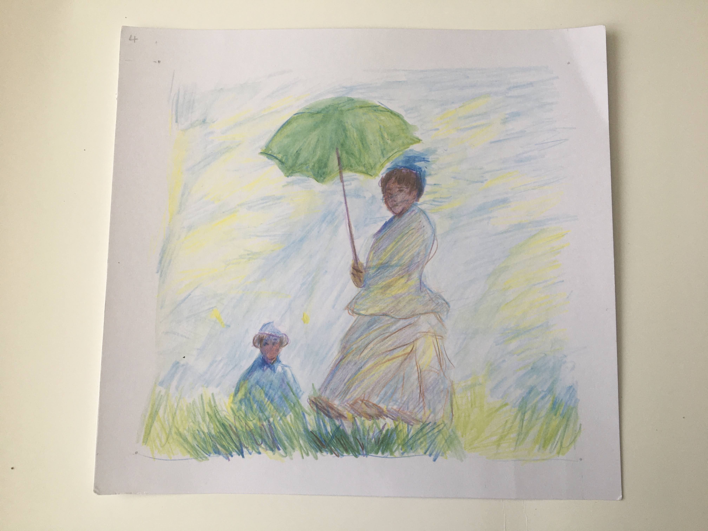
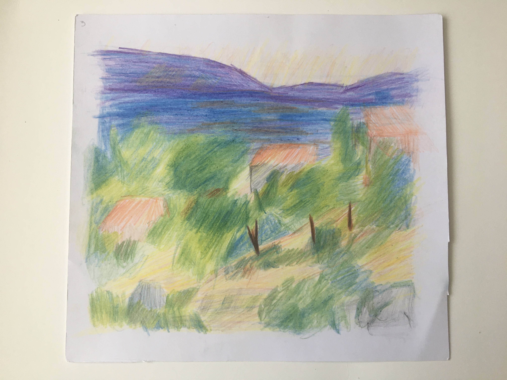

Original en el arte


Durante la asignatura, semana a semana, se realizaron estudios de obras de diferentes artistas y sus tecnicas, composición y colores. Trabaje con acuarelas. Aprendí sobre la teoria del color y composición de los artistas.